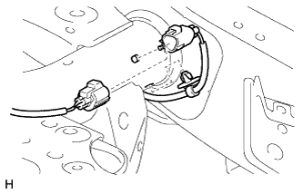
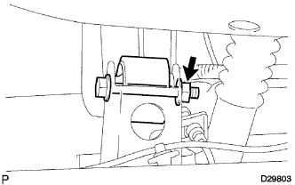
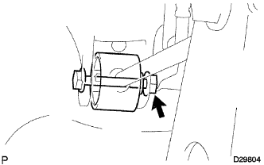

ВЕРХНИЙ РЫЧАГ ЗАДНЕЙ ПОДВЕСКИ > СНЯТИЕ |
| 1. СНИМИТЕ ЗАДНЕЕ КОЛЕСО |
| 2. ОТСОЕДИНИТЕ ТЯГУ ЗАДНЕГО ДАТЧИКА ВЫСОТЫ ПОДВЕСКИ В СБОРЕ (для моделей с пневматической подвеской) |
|  |
Отсоедините и снимите разъем.
Снимите зажим.
 |
Нанесите метки на тягу и кронштейн.
| *1 | Метка |
Отверните гайку и отсоедините тягу датчика.
Выверните 2 болта и снимите датчик высоты подвески.
| 3. СНИМИТЕ ЛЕВЫЙ ЗАДНИЙ ВЕРХНИЙ РЫЧАГ УПРАВЛЕНИЯ В СБОРЕ |
|  |
Отверните гайку и снимите шайбу и болт с кожуха задней полуоси.
|  |
Отверните гайку и снимите шайбу, болт и верхний рычаг управления в сборе.